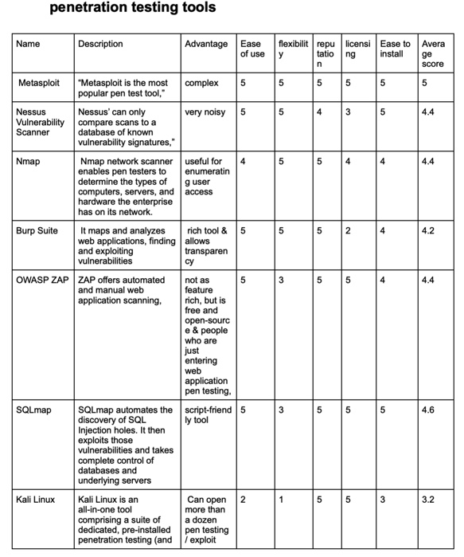

Seminar 3: Evaluation Exercise
Task
In preparation for this seminar we were to read the blog post “Geer, D. (2015) 8 Penetration Testing Tools That Will Do the Job. (Network World)" and evaluate the tools discussed against the criteria:
Ease of install, ease of use, flexibility, licensing, privacy, reputation.
Rate each tool on a scale of 1-5, 5 being the most popular/ highest score.
Discuss in our group which tool gets the highest rating according to your evaluation?
Group Activity (taken from Google Docs)

